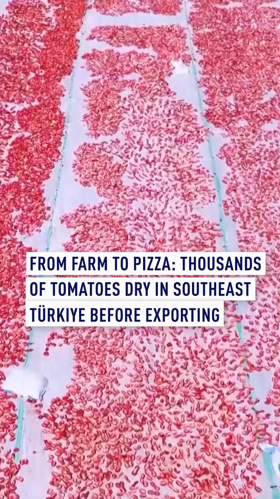

@CBSNews
📝 原文: Two members of Tennessee college cycling team killed in highway collision, officials say.
🇨🇳 译文: 官员称，田纳西州大学自行车队的两名成员在高速公路碰撞中丧生。

🕒 2026-08-19T23:00:00+00:00
| 来源 | 旧窗口内数量 | 本次新增 | 本次淘汰 | 当前窗口内共有 |
|---|---|---|---|---|
| 推文 + Dawn 新闻 | 0 | 72 | 0 | 72 |
| ARY News | 0 | 0 | 0 | 0 |
注：淘汰数 = 旧窗口内数量 + 本次新增 - 当前窗口内共有


